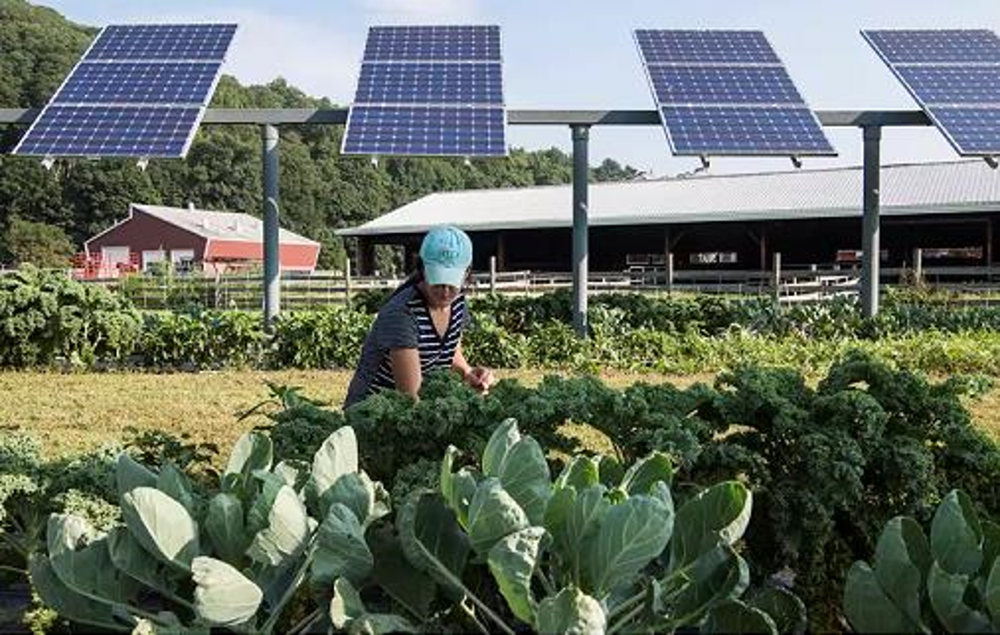
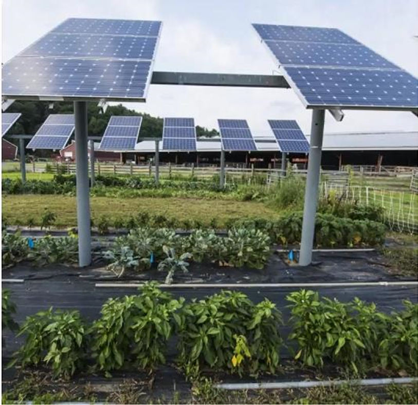
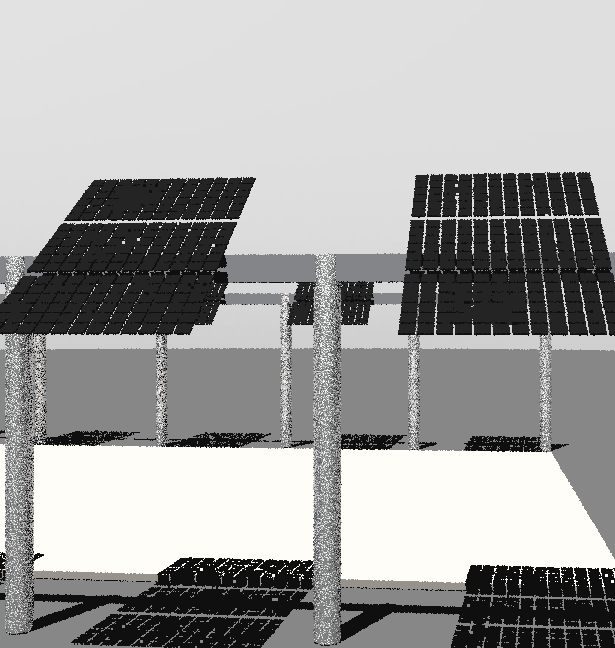
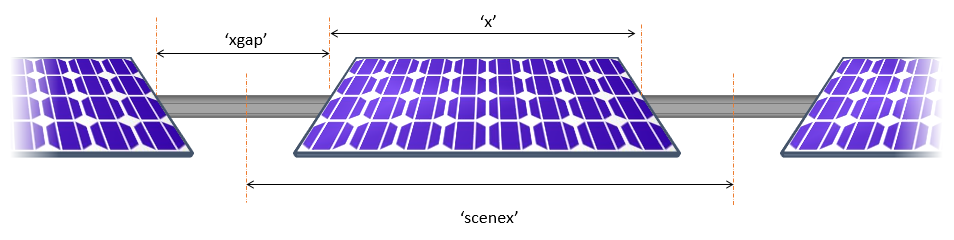
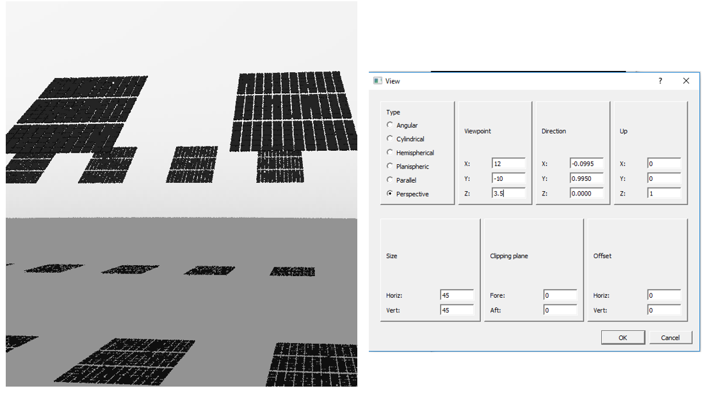

2 - AgriPV modeling with bifacial_radiance#
This journal shows how to model an AgriPV site, calculating the irradiance not only on the modules but also the irradiance received by the ground to evaluate available solar ersource for plants.
We assume that bifacia_radiance and radiance are properly installed.
These journal outlines 4 useful uses of bifacial_radiance and some tricks:
Creating the modules in the AgriPV site
Adding extra geometry for the pillars/posts supporting the AgriPV site
Hacking the sensors to sample the ground irradiance and create irradiance map
Adding object to simulate variations in ground albedo from different crops between rows.
Steps:#
Preview of what we will create:#
  And this is how it will look like:

0. Setup#
%%bash
wget https://github.com/LBNL-ETA/Radiance/releases/download/012cb178/Radiance_012cb178_Linux.zip -O radiance.zip
unzip radiance.zip
tar -xvf radiance-5.3.012cb17835-Linux.tar.gz;
Windows Subsystem for Linux has no installed distributions.
Distributions can be installed by visiting the Microsoft Store:
https://aka.ms/wslstore
---------------------------------------------------------------------------
CalledProcessError Traceback (most recent call last)
Cell In[1], line 1
----> 1 get_ipython().run_cell_magic('bash', '', 'wget https://github.com/LBNL-ETA/Radiance/releases/download/012cb178/Radiance_012cb178_Linux.zip -O radiance.zip\nunzip radiance.zip\ntar -xvf radiance-5.3.012cb17835-Linux.tar.gz;\n')
File C:\ProgramData\anaconda3\Lib\site-packages\IPython\core\interactiveshell.py:2475, in InteractiveShell.run_cell_magic(self, magic_name, line, cell)
2473 with self.builtin_trap:
2474 args = (magic_arg_s, cell)
-> 2475 result = fn(*args, **kwargs)
2477 # The code below prevents the output from being displayed
2478 # when using magics with decodator @output_can_be_silenced
2479 # when the last Python token in the expression is a ';'.
2480 if getattr(fn, magic.MAGIC_OUTPUT_CAN_BE_SILENCED, False):
File C:\ProgramData\anaconda3\Lib\site-packages\IPython\core\magics\script.py:153, in ScriptMagics._make_script_magic.<locals>.named_script_magic(line, cell)
151 else:
152 line = script
--> 153 return self.shebang(line, cell)
File C:\ProgramData\anaconda3\Lib\site-packages\IPython\core\magics\script.py:305, in ScriptMagics.shebang(self, line, cell)
300 if args.raise_error and p.returncode != 0:
301 # If we get here and p.returncode is still None, we must have
302 # killed it but not yet seen its return code. We don't wait for it,
303 # in case it's stuck in uninterruptible sleep. -9 = SIGKILL
304 rc = p.returncode or -9
--> 305 raise CalledProcessError(rc, cell)
CalledProcessError: Command 'b'wget https://github.com/LBNL-ETA/Radiance/releases/download/012cb178/Radiance_012cb178_Linux.zip -O radiance.zip\nunzip radiance.zip\ntar -xvf radiance-5.3.012cb17835-Linux.tar.gz;\n'' returned non-zero exit status 1.
!pip install git+https://github.com/NREL/bifacial_radiance.git@development
import os
os.environ['PATH'] += ":radiance-5.3.012cb17835-Linux/usr/local/radiance/bin"
os.environ['LIBRARYPATH'] += ":radiance-5.3.012cb17835-Linux/usr/local/radiance/lib"
os.environ['RAYPATH'] = ":radiance-5.3.012cb17835-Linux/usr/local/radiance/lib"
1. Create bifacial_radiance object#
import bifacial_radiance as br
import numpy as np
import pandas as pd
# This information helps with debugging and getting support :)
import sys, platform
print("Working on a ", platform.system(), platform.release())
print("Python version ", sys.version)
print("Pandas version ", pd.__version__)
print("bifacial_radiance version ", br.__version__)
import os
from pathlib import Path
testfolder = 'AgriPV'
if not os.path.exists(testfolder):
os.makedirs(testfolder)
print ("Your simulation will be stored in %s" % testfolder)
demo = br.RadianceObj('AgriPV_example',path = testfolder)
Download and read the weather data#
#Valid options: mm_dd, mm_dd_HH, mm_dd_HHMM, YYYY-mm-dd_HHMM
epwfile = demo.getEPW(25.2854, 51.5310) # Doha!
metdata = demo.readWeatherFile(epwfile, coerce_year=2023, starttime='2023-12-04', endtime='2023-12-04')
Set the albedom#
demo.setGround() # You can pass a value for fixed value, or empty it will grab the albedo column from the weatherdata
Make the module#

# MakeModule Parameters
modulename='3-up-collector'
numpanels = 3 # AgriPV site has 3 modules along the y direction
module_x = 2 # m
module_y = 1 # m. slope we will measure x>y landscape.
ygap = 0.03 # m
xgap = 1.5 # m
zgap = 0.1 # m
# TorqueTube Parameters
tubetype='square' # Other options: 'square' , 'hex'
material = 'Metal_Grey' # Other options: 'black'
diameter = 0.1 # m
axisofrotationTorqueTube = False
zgap = 0.05 # m
visible = True
#Add torquetube
tubeParams = {'tubetype':tubetype,
'diameter':diameter,
'material':material,
'axisofrotation':False,
'visible':True}
module=demo.makeModule(name=modulename,x=module_x,y=module_y,numpanels=numpanels,
xgap=xgap, ygap=ygap, zgap=zgap, tubeParams=tubeParams)
Make the Sky#
timeindex = metdata.datetime.index(pd.to_datetime('2023-12-04 13:00:0 +4')) # Make this timezone aware, use -5 for EST.
demo.gendaylit(timeindex)
Make the Scene#
# Scene Parameters:
azimuth_ang=90 # Facing south
tilt = 20 # tilt.
pitch = 7 # m
albedo = 0.2 # 'grass' # ground albedo
clearance_height = 2.5 # m
nMods = 5 # six modules per row.
nRows = 3 # 3 row
sceneDict = {'tilt':tilt,'pitch': pitch,'clearance_height':clearance_height,'azimuth':azimuth_ang,
'nMods': nMods, 'nRows': nRows}
scene = demo.makeScene(module=modulename, sceneDict=sceneDict)
Put it all together#
octfile = demo.makeOct()
If desired, you can view the Oct file at this point:
rvu -vf views\front.vp -e .01 tutorial_1.oct
## Comment the ! line below to run rvu from the Jupyter notebook instead of your terminal.
## Simulation will stop until you close the rvu window
# !rvu -vf views\front.vp -e .01 tutorial_1.oct
And adjust the view parameters, you should see this image.

Analyze the Panel#
analysis = br.AnalysisObj(octfile, demo.name)
frontscan, backscan = analysis.moduleAnalysis(scene, sensorsy=3, modWanted=1, rowWanted=2)
moduleresultsfront, moduleresultsback = analysis.analysis(octfile, "_modulescan", frontscan, backscan) # compare the back vs front irradiance
Analyze the Ground#
sensorsground = 5
frontscan, backscan, groundscan = analysis.moduleAnalysis(scene, sensorsy=3, sensorsground = 2)
groundresults, moduleresultsback = analysis.analysis(octfile, "_groundscan", groundscan, backscan) # compare the back vs front irradiance